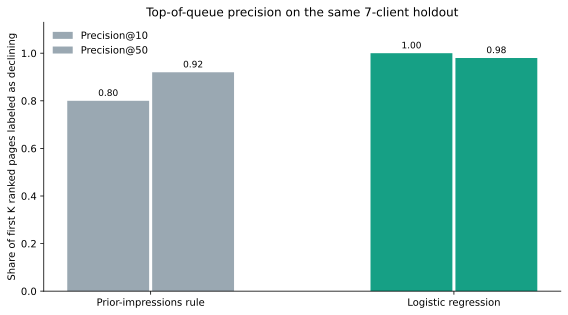
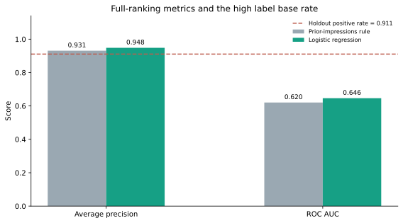

Abstract
Question. On this fixed snapshot, can logistic regression rank content with a later 20% or greater impression decline ahead of a prior-impressions rule?
Data. I used the repo's 30,000-row anonymized starter extract and retained 11,119 eligible rows before a 783-row, seven-client holdout.
Method. A seeded logistic model used prior-window impressions and clicks plus age at cutoff; the baseline ranked by prior-window impressions on the exact same holdout.
Result. Model precision@10 was 1.00 versus 0.80, precision@50 was 0.98 versus 0.92, average precision was 0.948 versus 0.931, and ROC AUC was 0.646 versus 0.620.
Use. This is a cautious review-priority signal for a human editor, not evidence that refreshing a page will restore traffic.
1. Introduction / problem
Editors have more pages to inspect than time. The practical question is not whether an algorithm should rewrite a page; it is whether a small, transparent ranking can help choose what a person should examine first. A mistaken flag costs review time, while a missed candidate may remain unexamined.
The experiment builds on a provisional lane of refresh and content-opportunity scoring. It compares a model with the Week 4 exposure rule and asks whether a few observable, pre-cutoff signals add ranking value on unseen clients inside the same snapshot.
2. Data
The source is data/raw/content_refresh_anonymized.csv, a 30,000-row, 44-column starter extract in the public internship repository. The evaluated eligible set contains 11,119 rows after excluding content younger than 60 days at snapshot time (age at cutoff below 30 days) and content with fewer than 500 prior-window impressions. The fixed seed split puts 10,336 rows from 21 clients in training and 783 rows from 7 entirely held-out clients in test; there is no client overlap.
The target compares two adjacent 30-day impression fields: a row is labelled declining when the later window has less than 80% of prior-window impressions. Features are prior-window impressions, prior-window clicks, and content age at cutoff. The dataset contains pseudonymous keys for grouped validation and tie-breaking; they are not model inputs and are not published in this page. The analysis excludes later-window data, trend fields derived from the label, composite product flags, client identifiers, URLs, raw queries, and text.
This analysis uses the committed 30,000-row starter slice, not a fresh scan of the separate 78.8-million-row warehouse table. The FlyRank March 2026 research report describes its own 341,701-piece portfolio and treats its ML appendix as exploratory; those portfolio-level numbers are not results from this experiment.
3. Methodology
Model and baseline
Logistic regression follows a log1p transform and a standard scaler fit on training rows only. The baseline ranks the same test rows by prior-window impressions. The random seed is 42, and the logistic estimator uses max_iter=1000 with default regularization. No hyperparameter search or threshold tuning is used.
Validation and leakage checks
A seeded 75/25 GroupShuffleSplit holds out whole clients. The label uses only the later window for evaluation, while the feature list contains only values available at cutoff. Assertions check the exact dataset hash, no duplicate client/content keys, zero train/test client overlap, valid nonnegative features, and no label or trend field in the feature list.
Precision@K reports the share of observed declines among the first K pages in a ranked list. Average precision and ROC AUC summarize the overall ranking. The holdout decline prevalence is reported because high precision can be deceptively easy when positive labels are common.
4. Results: model versus baseline
The holdout has a 91.1% decline base rate (713 of 783 rows). The logistic model improves each displayed ranking metric over the prior-impressions rule, but the absolute top-50 difference is three rows.
| Method | Precision@10 | Precision@50 | Average precision | ROC AUC |
|---|---|---|---|---|
| Prior-impressions rule | 0.80 | 0.92 | 0.9309 | 0.6205 |
| Logistic regression | 1.00 | 0.98 | 0.9483 | 0.6463 |
| Holdout decline base rate | — | — | 0.9106 | 0.5000 |


At a separate probability threshold of 0.50, the model yields 185 false negatives and 39 false positives on the holdout. This threshold is not the operating review rule; the counts illustrate that ranking precision does not remove missed cases or unnecessary reviews.
5. Limitations and honest framing
- One anonymized starter snapshot and one seeded client holdout do not test performance on a later date. An untouched future-time evaluation is needed before operational reliance.
- The 91.1% holdout decline rate is higher than the 58.5% training rate recorded in the prior model notebook. This base-rate shift limits how confidently absolute precision can be generalized.
- The 0.06 precision@50 difference is three additional observed declines among fifty reviewed rows on this split. It is directional and modest, not proof of broad improvement.
- A decline label is not an intervention outcome. This analysis cannot say that refreshing, expanding, or rewriting a page will recover impressions.
- The features omit live page content, current search intent, query-level evidence, seasonality, tracking changes, business value, and editorial judgment. Correlated clicks and impressions complicate feature interpretation.
- Metrics use one seed and one group split; no confidence intervals or multi-fold variability estimates are reported.
Use “observed,” “measured,” “ranks,” and “decision support.” Do not say “causes,” “will increase,” or “predicts Google.”
6. Ranked recommendations
- Use the score only to order a bounded human review queue. It slightly improves top-of-queue precision in this holdout, and does not determine what to edit.
- Verify context before recommending an update. An editor should inspect current page accuracy, intent, source freshness, tracking quality, and demand changes. The observed decline is a prompt to investigate.
- Log review outcomes and run a future-time evaluation. Record whether reviewers keep, alter, or reject the suggestion and why; compare a later untouched outcome window before expanding use.
Never automate publishing or rewriting factual claims, canonical or indexing changes, deletion or merging, client contact, budget allocation, or traffic/revenue promises.
7. Reproducibility
The notebook uses seed 42, pins the starter-data Git commit and SHA-256, and regenerates the metrics receipt and two aggregate SVGs. From a fresh clone: install requirements.txt, open the notebook in Colab or Jupyter, and run all cells. The local CSV is included in the internship repo; if it is absent, the notebook fetches only the exact public commit and checks its hash.
8. Research design notes
I used the assignment's guidance to make the paper skimmable: a question-shaped headline, a five-sentence abstract, clear section labels, one point per chart, a plain-language caption, and a compact comparison table. The design also follows public research-writing guidance on readable titles and abstracts, and ML research guidance to state limitations, model settings, and an avenue for reproducibility.
- Scientific Reports: submission and manuscript guidance
- NeurIPS Paper Checklist: claims, limitations, reproducibility, and experimental settings
- Datawrapper Academy: communicating uncertainty and measured values
- FlyRank, The State of AI-Driven SEO in Numbers (March 2026)
These sources informed page structure and chart choices; they do not validate the model results.
9. Acknowledgments & data credit
Built on the FlyRank ML Internship dataset. The work uses the repo's anonymized starter extract and publishes only aggregate metrics. No client names, domains, URLs, raw queries, pseudonymous identifiers, or row-level outcomes appear in this paper.